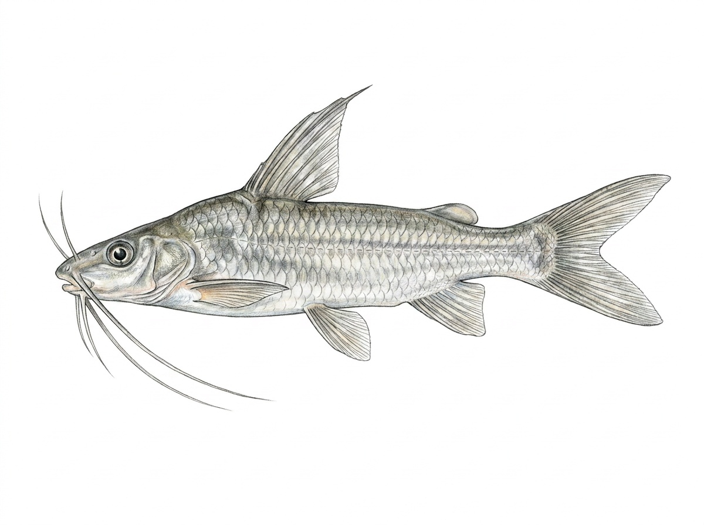

Gangetic Mystus
Mystus cavasius
The Gangetic Mystus is a freshwater catfish native to Sri Lanka and other parts of South Asia. In Sri Lanka, it is found in rivers, streams, reservoirs, marshes, and other lowland freshwater habitats with slow to moderate water flow. It is a bottom-dwelling species that prefers areas with submerged vegetation, muddy or sandy substrates, and sheltered places where it can hide during the day. This small catfish is mainly active during the evening and night, using its sensitive barbels (“whiskers”) to locate food in low-light conditions. It feeds on small fish, aquatic insects, insect larvae, crustaceans, worms, and other small aquatic organisms. The Gangetic Mystus plays an important role as a native freshwater predator, helping maintain balance within aquatic food chains. Its adaptability allows it to survive in a variety of freshwater environments across Sri Lanka.